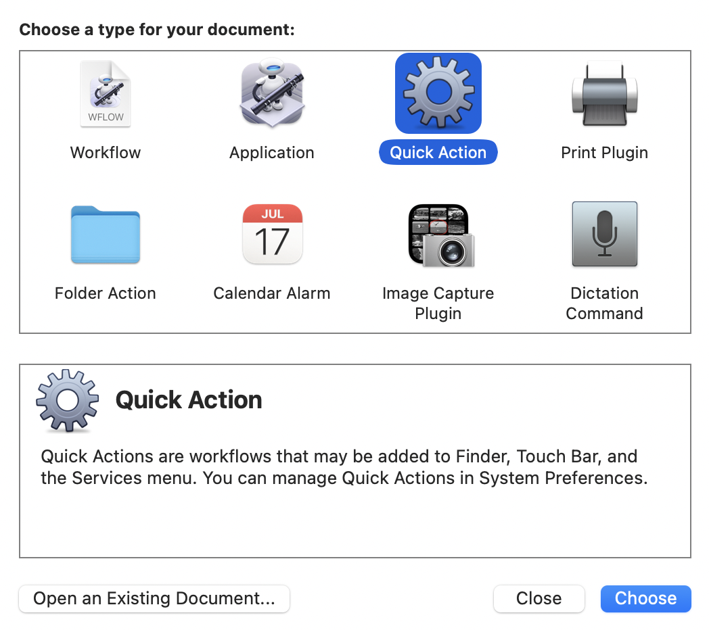
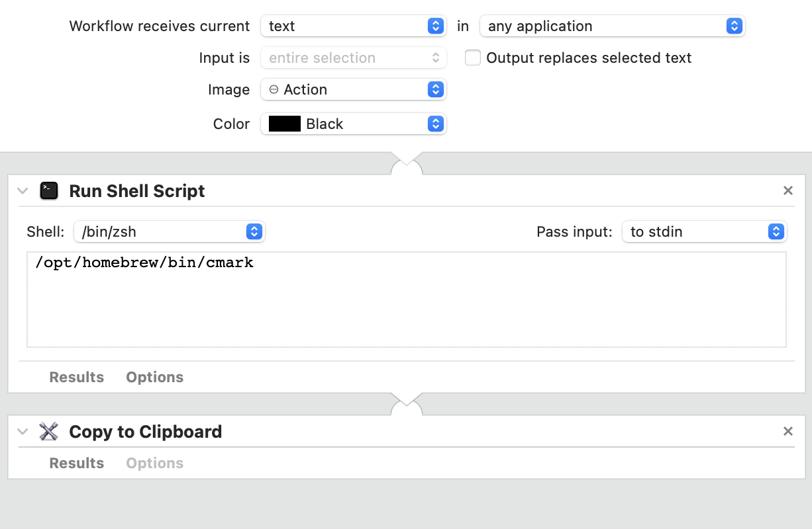

Markdown to HTML on macOS
So maybe you’ve decided to move your blog or website to an HTML only workflow. Congratulations on joining our little movement!
So you’ve written a few posts or pages in straight HTML. Maybe you’ve noticed that you link to things less
often
because typing <a href... gets to be a little cumbersome. That’s okay! A lot of sites are a bit
too
linky for my tastes. Maybe you’ve wanted to make some sweet unordered lists, but it felt a bit too cumbersome.
Maybe
your code editor could help you a bit more, but you haven’t gotten around to improving it yet.
So now you want to write a more sizable post and you’re kind of wishing you had access to Markdown. You said your site is HTML now and caving in to a static site generator would feel so wrong. There’s got to be another way!
(Oh my goodness, this feels like those excruciating intros recipe websites are filled with. I’m so sorry!)
If you’re on macOS, I have an option for you and it involves my old friend, Automator! This does introduce code and dependencies to your simple, HTML workflow, but maybe it’s light enough to not be a big deal?
- Do you already use homebrew? If so, install cmark:
brew install cmark - Find where your cmark is installed:
% which cmark /opt/homebrew/bin/cmark - Open Automator and at the prompt create a new Quick Action: 
- Set it up like this, using your cmark installation location as found in step 2: 
- Save that Automator script. I called it Markdown > HTML.
- Write your blog post in your preferred markdown editor (mine is iA Writer), select the text, and click (for example) iA Writer > Services > Markdown > HTML.
- The HTML is now on your clipboard, ready to be pasted into your HTML post/page template.
{kind=link}
{kind=link}
Yes, this introduces dependencies on cmark and Automator. Good thing is if these ever break you can just go back to HTML editing or most markdown editors have an “export to HTML” option.
May 23, 2022